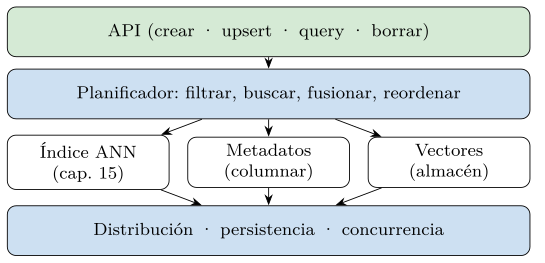
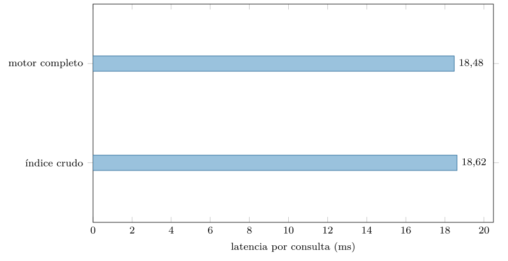
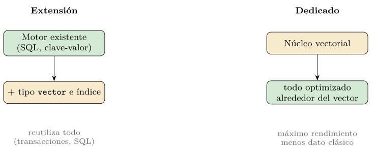
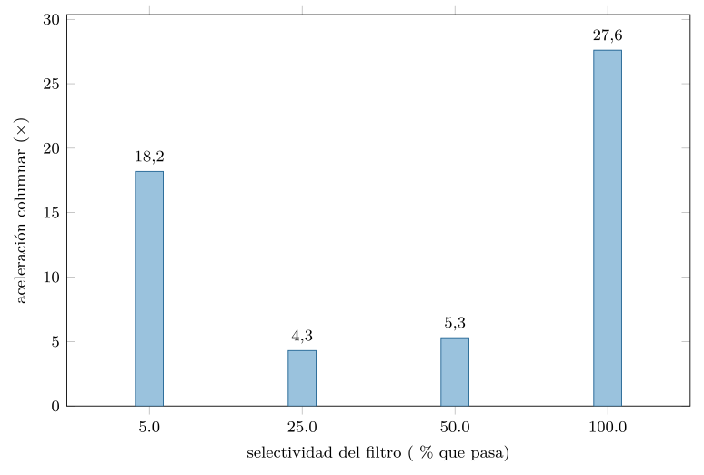
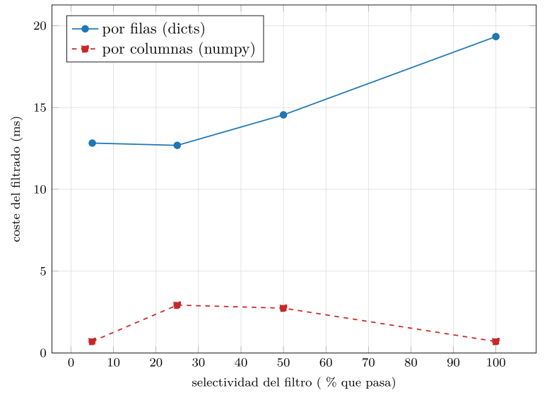
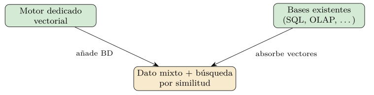
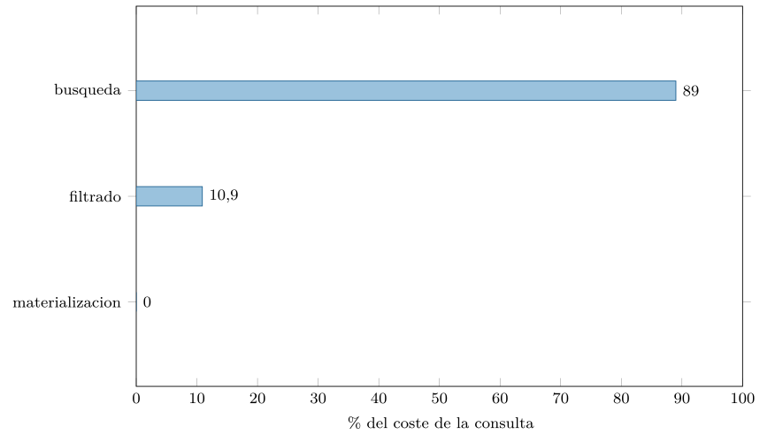
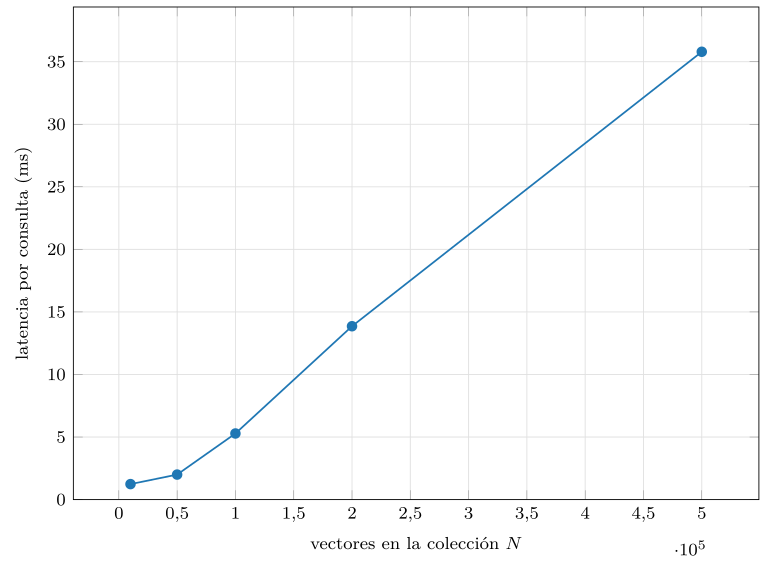
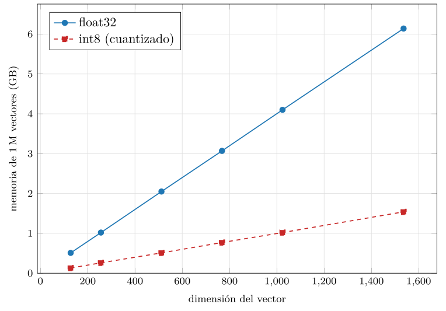

Capítulo 16. Motores: dedicados frente a extensiones
El capítulo anterior construyó el índice —el corazón de la búsqueda vectorial— como una pieza de algoritmo aislada. Pero un índice no es un producto: nadie despliega un grafo HNSW desnudo en producción. Lo que se despliega es un motor, un sistema completo que envuelve el índice con todo lo que una base de datos de verdad necesita: una API para hablar con él, un almacén para los vectores y sus metadatos, un planificador que combina la búsqueda con los filtros, y la maquinaria de distribución, persistencia y concurrencia que las partes I y II estudiaron. Este capítulo recorre ese paisaje de motores: qué partes añaden sobre el índice, qué familias hay y cómo elegir entre ellas.
La pregunta que organiza el capítulo es una bifurcación de diseño. Hay dos caminos para dotar a un sistema de búsqueda vectorial. El primero es extender un motor que ya existe —una base relacional, un almacén clave-valor— añadiéndole el vector como un tipo de dato más; así se reutiliza toda su infraestructura madura, a cambio de heredar sus limitaciones. El segundo es construir un motor dedicado desde cero, pensado para el vector, que optimiza cada componente a su alrededor, a cambio de integrarse peor con el dato clásico. Esa tensión —extensión frente a dedicado— recorre todo el capítulo, y entenderla es la clave para no elegir un motor por moda sino por encaje.
Conviene fijar desde el principio que este capítulo cambia de registro respecto a los anteriores. Hasta aquí la cuarta parte construía mecanismos —la geometría, la anatomía de un almacén, los algoritmos de índice— que se podían medir desde cero. Este capítulo trata de productos: sistemas reales, vivos, en un mercado que se mueve a toda velocidad. Eso obliga a un equilibrio distinto entre lo que se mide y lo que se describe, y a poner el acento en los criterios duraderos por encima de los nombres concretos, que cambiarán. El objetivo no es que el lector memorice qué motor está de moda, sino que sepa diseccionar cualquiera —el de hoy y el de dentro de un lustro— y elegir con fundamento.
Una advertencia honesta de método abre el capítulo. Los motores reales —pgvector, Qdrant, Milvus, Redis, Weaviate— son servidores que no están disponibles en el entorno de este libro, y no se inventarán cifras de ninguno de ellos. Lo que sí se hace es doble: por un lado, construir un motor genérico desde cero, en numpy, que deja a la vista la anatomía común a todos y permite medir lo que es local y real —el coste de la serialización, del almacén de metadatos, del propio motor—; por otro, mostrar la API factual de cada producto real como listado ilustrativo y compararlos por arquitectura. Así se separa lo que se puede medir de lo que se debe describir, sin confundir una cosa con la otra.
La anatomía de un motor
Por encima del índice, todo motor vectorial añade las mismas capas, y conviene verlas antes de comparar productos (figura 16.1). Arriba, una API —por SQL, por gRPC, por REST— que ofrece el puñado de operaciones del capítulo 14: crear una colección, insertar o actualizar (upsert), consultar los más próximos con filtros, borrar, persistir. Debajo, un planificador de consultas que decide cómo combinar la búsqueda vectorial con los filtros de metadatos —prefiltrar o posfiltrar, fusionar señales, reordenar—, el equivalente vectorial del optimizador de consultas relacional del capítulo 3. Más abajo, las tres estructuras de datos: el índice del capítulo 15, el almacén de metadatos y el almacén de vectores. Y en la base, la capa de distribución, persistencia y concurrencia que convierte el algoritmo en una base de datos fiable.

El módulo de la práctica construye un motor genérico mínimo —MotorVectorial— con esa anatomía: API de upsert y query, almacén de metadatos columnar, filtrado y materialización del resultado (listado 16.2). No es un juguete: ingiere por lotes, filtra por metadatos, busca y devuelve los resultados con su contexto. Lo único que lo separa de un producto real es la ingeniería de escala —distribución, durabilidad, concurrencia— y la madurez de la API, no la anatomía.
El upsert —la ingesta— merece verse completo, porque revela el almacén columnar en acción (listado 16.1): apila los vectores normalizados en la matriz, extiende la lista de identificadores y, lo más característico, añade cada campo de metadatos a su columna, no a una fila. Esa disposición —un array por campo— es la que, como midió la práctica, hace que el filtrado posterior sea barato. La ingesta y el filtrado son, en realidad, dos caras del mismo diseño de almacenamiento.
def upsert(self, ids, vecs, metas):
vecs = normalizar(vecs.astype(np.float32)) # a la esfera, una vez
self.vectores = np.vstack([self.vectores, vecs])
self.ids.extend(ids)
for col, valores in metas.items(): # cada campo, su columna
prev = self.meta_cols.get(col, np.empty(0, valores.dtype))
self.meta_cols[col] = np.concatenate([prev, valores])Listado 16.1. El upsert del motor: apilar los vectores normalizados y extender los metadatos COLUMNA a columna (no fila a fila), que es lo que abarata el filtro.
class MotorVectorial:
def __init__(self, dim, metrica="coseno"):
self.vectores = np.empty((0, dim), dtype=np.float32)
self.ids = []
self.meta_cols = {} # metadatos por columnas
def upsert(self, ids, vecs, metas): # ingesta por lotes
self.vectores = np.vstack([self.vectores, normalizar(vecs)])
self.ids.extend(ids)
for col, val in metas.items():
self.meta_cols[col] = concat(self.meta_cols.get(col), val)
def query(self, vector, k=10, filtro=None):
idx = np.where(filtro(self.meta_cols))[0] if filtro else None
sims = (self.vectores[idx] if idx is not None
else self.vectores) @ normalizar(vector)
orden = (idx[np.argsort(-sims)[:k]] if idx is not None
else np.argsort(-sims)[:k])
return [self._materializar(i) for i in orden]Listado 16.2. El motor generico: API de upsert y query sobre un almacen de metadatos columnar; el indice es flat por claridad (enchufaria cualquiera del cap. 15).
¿Cuánto cuesta esa capa de motor por encima del índice? La práctica lo mide comparando la búsqueda cruda en el índice con la misma consulta a través de la API completa del motor —con normalización, filtrado y materialización—. El resultado tranquiliza: el motor genérico añade apenas un 1 % sobre la búsqueda cruda. La lección es importante: en un motor bien hecho, el cuello de botella es el índice, no la capa que lo envuelve (figura 16.2).

src/cap16_motores.py.La abstracción —la API, el planificador, la materialización— es prácticamente gratis comparada con el trabajo de comparar vectores. Por eso tiene sentido pagar la comodidad de un motor en vez de manejar el índice a pelo: la comodidad no cuesta rendimiento. Donde un motor real sí añade coste es en la frontera con el cliente y en la distribución, los dos temas que siguen.
El planificador: dónde se gana la consulta híbrida
De todas las capas del motor, la que más lo diferencia de un índice desnudo —y la que más distingue a unos motores de otros— es el planificador: la pieza que, ante una consulta con filtro, decide cómo combinar la búsqueda vectorial con la condición de metadatos. Es el equivalente vectorial del optimizador de consultas del capítulo 3, y hereda directamente el dilema que el capítulo 14 planteó y el capítulo 15 complicó: prefiltrar o posfiltrar.
Recordemos la tensión. El posfiltrado —buscar en el índice y descartar después— es trivial de implementar pero sufre inanición cuando el filtro es selectivo: entre los vecinos que el índice devuelve pueden no quedar suficientes que pasen el filtro. El prefiltrado —restringir por metadatos y buscar solo en el subconjunto— es correcto, pero choca con que un índice aproximado no sabe buscar bien en un subconjunto arbitrario: un grafo HNSW cuyos nodos válidos son el 1 % queda lleno de agujeros y la navegación se atasca. Un buen planificador no elige una estrategia fija, sino que decide según la selectividad estimada del filtro: prefiltrar con fuerza bruta si pasan muy pocos, posfiltrar si pasan casi todos, o —la solución de los mejores motores— filtrar durante la navegación del índice, saltándose los nodos que no cumplen sin abandonar el grafo.
Aquí es donde los motores se juegan de verdad la diferencia. El filtrado integrado de Qdrant, la elección dinámica de estrategia de algunos, la calidad del estimador de selectividad: son detalles del planificador que no aparecen en una comparativa de recall puro pero que deciden si la consulta híbrida —la consulta real, casi siempre— va rápida y devuelve resultados completos, o va lenta y se queda corta. Por eso el capítulo 17 dedica tanto espacio a la consulta híbrida: porque es donde la búsqueda vectorial deja de ser un algoritmo de juguete y se convierte en una consulta de base de datos de verdad, con su filtro, su plan y su optimización. El planificador es el cerebro del motor, y a menudo el factor que decide cuál elegir.
La frontera cliente-servidor
Un motor es, casi siempre, un servidor al que el cliente habla por la red, y esa frontera tiene un coste que el índice aislado no tenía: hay que serializar los vectores para enviarlos y recibirlos. Resulta ser una decisión de diseño con consecuencias medibles. La práctica compara enviar un lote de vectores como JSON —texto, el formato cómodo y legible— frente a binario —los bytes crudos del float32— (figura 16.3). La diferencia es contundente: el JSON pesa más de cinco veces lo que el binario —cada número en coma flotante ocupa una decena de caracteres de texto en vez de cuatro bytes— y es miles de veces más lento de codificar y descodificar.

float32 (log-log). El JSON pesa unas cinco veces más; además es miles de veces más lento de codificar. Datos de src/cap16_motores.py.La conversión a binario es, además, trivial —los bytes crudos del array, sin codificación—, frente al recorrido carácter a carácter del JSON (listado 16.3); de ahí el factor de miles en el tiempo de codificación que la práctica midió. La asimetría es total: el binario es más pequeño y más rápido, sin contrapartida salvo la legibilidad para depurar.
import json, numpy as np
vecs = np.random.standard_normal((1000, 768)).astype(np.float32)
binario = vecs.tobytes() # 3,0 MB, casi instantaneo
texto = json.dumps(vecs.tolist()) # 15,5 MB, miles de veces mas lento
# en la frontera caliente, el binario no tiene rivalListado 16.3. Serializar un lote de vectores: binario (los bytes crudos del float32, directo) frente a JSON (texto, caracter a caracter). El binario gana en tamano y en tiempo.
Por eso los motores vectoriales serios no hablan JSON en el camino caliente: usan protocolos binarios como gRPC, o formatos columnares como Apache Arrow, para mover los vectores sin el peaje del texto. Es la misma lección de localidad y eficiencia de representación que recorre el libro, ahora en la frontera de la red: un vector es un objeto numérico denso, y tratarlo como texto —por cómodo que resulte para depurar— multiplica el ancho de banda y la latencia. Cuando un sistema vectorial va lento sin razón aparente, la serialización en la frontera es uno de los primeros sospechosos. La API REST con JSON está bien para administrar y para volúmenes pequeños; para ingerir millones de vectores o servir miles de consultas por segundo, el binario es obligado.
Familias de motores
Las extensiones: pgvector y Redis
La primera familia —las extensiones— añade el vector a un motor que ya existe, y su ejemplo canónico es pgvector, la extensión que lleva la búsqueda vectorial a PostgreSQL (figura 16.4, izquierda). Su propuesta es seductora: si tus datos ya viven en PostgreSQL —con sus tablas, sus claves, sus transacciones, su SQL—, pgvector añade una columna de tipo vector y un índice de similitud, y la búsqueda por proximidad pasa a ser una cláusula ORDER BY más, conviviendo con todo lo relacional (listado 16.4).

CREATE TABLE doc (id bigserial, tema text, emb vector(768));
CREATE INDEX ON doc USING hnsw (emb vector_cosine_ops)
WITH (m = 16, ef_construction = 64);
SET hnsw.ef_search = 64; -- el mando de consulta
SELECT id, tema FROM doc
WHERE tema = 'derecho' -- prefiltro relacional
ORDER BY emb <=> :consulta -- los mas proximos (coseno)
LIMIT 10;Listado 16.4. pgvector: una columna vector, un indice HNSW con sus parametros, y una consulta hibrida con filtro relacional y orden por similitud (API factual).
Más allá de la consulta básica, pgvector ofrece el repertorio que cabe esperar de una columna de primera clase: los tres operadores de distancia —<=> coseno, <#> producto interno negativo, <-> euclídea—, la inserción por lotes, y la combinación con todo el SQL —agregaciones, JOIN con otras tablas, subconsultas— (listado 16.5). Es esa composición con el SQL de siempre, y no la búsqueda vectorial aislada, lo que hace fuerte a la extensión: una sola consulta puede unir la similitud con un JOIN a la tabla de usuarios y un filtro de permisos, algo que un motor dedicado tendría que orquestar desde fuera.
-- los tres operadores de distancia
SELECT id, emb <=> :q AS cos, emb <#> :q AS ip, emb <-> :q AS l2
FROM doc ORDER BY emb <=> :q LIMIT 5;
-- insercion por lotes
INSERT INTO doc (tema, emb) VALUES ('a', :e1), ('b', :e2), ('c', :e3);
-- composicion con JOIN y permisos en una sola consulta
SELECT d.id, u.nombre
FROM doc d JOIN usuario u ON d.autor = u.id
WHERE u.equipo = :equipo -- filtro relacional via JOIN
ORDER BY d.emb <=> :q LIMIT 10;Listado 16.5. pgvector mas alla de lo basico: los tres operadores de distancia, insercion por lotes y composicion con JOIN y agregacion (API factual).
La gran ventaja de pgvector es la integración: la búsqueda vectorial hereda, gratis, todo lo que PostgreSQL ya hace bien —transacciones ACID, claves foráneas, JOIN, copias de seguridad, control de acceso, el ecosistema entero—. Para una aplicación que ya usa PostgreSQL y necesita añadir búsqueda semántica sobre datos moderados —hasta unos pocos millones de vectores—, suele ser la opción más sensata, porque no introduce un sistema nuevo que mantener. Sus límites aparecen a gran escala: el índice vectorial compite por los recursos con la carga relacional, la distribución de PostgreSQL no está pensada para repartir millones de vectores, y la optimización de bajo nivel del índice no llega a la de un motor especializado. pgvector es la prueba de que, para muchos casos, la mejor base vectorial es la base de datos que ya tienes.
Conviene además conocer dos detalles de pgvector que deciden su rendimiento, porque ilustran que una extensión no es magia. El primero es la elección de índice: pgvector ofrece tanto HNSW —mejor recall y velocidad, más memoria, construcción más lenta— como IVFFlat —más ligero, pero que exige conocer los datos al construirlo y se degrada si cambian—; la elección reproduce, dentro de PostgreSQL, el dilema del capítulo 15. El segundo es la interacción con el optimizador de PostgreSQL: cuando una consulta combina el orden por similitud con un WHERE relacional, el planificador de PostgreSQL —no pensado para vectores— debe decidir si usar el índice vectorial o el relacional primero, y no siempre acierta; afinar esa interacción (con ef_search, con índices sobre las columnas del filtro) es parte del oficio de operar pgvector a cierta escala. Son las costuras donde se nota que el vector es un huésped en una casa relacional, no el dueño.
La idea de extender no se limita a lo relacional. Redis —el almacén clave-valor en memoria del capítulo 8— añadió capacidades de búsqueda vectorial a su módulo de búsqueda, convirtiéndose en otra extensión, esta vez sobre un motor pensado para la velocidad en memoria (listado 16.6). La propuesta encaja con la naturaleza de Redis: como todo vive en memoria y Redis es famoso por su baja latencia, la búsqueda vectorial hereda esa rapidez, y resulta natural para casos donde los vectores ya pasan por Redis —una caché semántica, una capa de recuperación de baja latencia delante de un modelo—.
# definir un indice con un campo vectorial HNSW
r.execute_command(
"FT.CREATE", "idx", "SCHEMA",
"tema", "TAG",
"emb", "VECTOR", "HNSW", "6", "TYPE", "FLOAT32",
"DIM", "768", "DISTANCE_METRIC", "COSINE")
# consultar los 10 mas proximos con filtro por tag
r.execute_command(
"FT.SEARCH", "idx", "(@tema:{derecho})=>[KNN 10 @emb $q]",
"PARAMS", "2", "q", consulta.tobytes()) # vector en binarioListado 16.6. Redis vectorial: definir un indice con un campo VECTOR (HNSW) y consultar los mas proximos a un vector, con filtro (API factual, ilustrativa).
Redis vectorial comparte la filosofía de pgvector —reutilizar un motor maduro— pero con otro perfil: donde PostgreSQL aporta la riqueza relacional, Redis aporta la latencia en memoria. Su límite también es el de su anfitrión: la memoria es cara, y mantener millones de vectores en RAM tiene un coste que un motor con almacenamiento en disco evita. La elección entre una extensión u otra depende, por tanto, de qué motor ya se tiene y de qué perfil —riqueza relacional, latencia en memoria— pesa más en el caso. La familia de las extensiones se resume en una idea: no traigas un sistema nuevo si el que tienes puede hacer el trabajo.
Hay una sutileza en el caso de Redis que conviene señalar, porque generaliza a toda extensión sobre un motor en memoria. Como Redis guarda todo en RAM, su búsqueda vectorial hereda no solo su latencia sino también su límite: la colección no puede superar la memoria disponible, y la RAM es el recurso más caro. Esto lo hace idóneo para colecciones moderadas y muy consultadas —donde la latencia manda— y poco adecuado para los miles de millones de vectores que un motor con almacenamiento en disco o cuantización agresiva sí maneja. Redis vectorial, por tanto, no compite con Milvus en escala, sino que ocupa otro nicho: la capa rápida y caliente, muchas veces por delante de un almacén mayor. Es un recordatorio de que cada extensión hereda las virtudes y las restricciones de su anfitrión, y que elegirla es, en el fondo, elegir ese anfitrión para una tarea nueva.
Motores dedicados: Qdrant, Milvus, Weaviate
La segunda familia —los motores dedicados— toma el camino opuesto: construir desde cero un sistema cuyo ciudadano de primera clase es el vector (figura 16.4, derecha). No heredan la infraestructura de nadie, así que tienen que reconstruir mucho —persistencia, distribución, filtrado—, pero a cambio lo optimizan todo alrededor de la búsqueda por similitud. Tres nombres dominan el panorama, con filosofías distintas dentro de la misma familia.
Qdrant —escrito en Rust— destaca por su filtrado: integra los filtros de metadatos dentro de la navegación del grafo HNSW, atacando de raíz el problema de la búsqueda con filtros que el capítulo 15 planteó, y ofrece una API por gRPC y REST limpia y bien pensada (listado 16.7). Milvus —pensado para la escala masiva— separa el cómputo del almacenamiento en una arquitectura distribuida de componentes especializados, y soporta múltiples tipos de índice (IVF, HNSW, sus combinaciones con cuantización), apostando por los miles de millones de vectores. Weaviate —con un enfoque más de grafo de conocimiento— integra la vectorización (puede llamar al modelo por ti), ofrece una API GraphQL y se orienta a casos donde el vector convive con un esquema de objetos y relaciones.
cliente.create_collection(
"docs", vectors_config=VectorParams(size=768, distance="Cosine"))
cliente.upsert("docs", points=[
PointStruct(id=1, vector=emb, payload={"tema": "derecho"})])
cliente.search(
"docs", query_vector=consulta, limit=10,
query_filter=Filter(must=[ # filtro integrado
FieldCondition(key="tema", match=MatchValue(value="derecho"))]))Listado 16.7. Qdrant: crear una coleccion, insertar puntos con su payload y buscar con filtro, por su cliente Python (API factual, ilustrativa).
Milvus expone una API parecida en espíritu pero pensada para la escala, con tipos de índice explícitos y una fase de carga del índice en memoria antes de consultar (listado 16.8). Su arquitectura separa los nodos de consulta, de datos y de coordinación, de modo que cada parte escala por su cuenta —el patrón de separar cómputo y almacenamiento que el libro ha hilado desde el principio.
coleccion.create_index("emb", {
"index_type": "IVF_FLAT", "metric_type": "COSINE",
"params": {"nlist": 1024}})
coleccion.load() # carga el indice en memoria
coleccion.search(
data=[consulta], anns_field="emb", limit=10,
param={"params": {"nprobe": 16}}, # el mando de consulta
expr="tema == 'derecho'") # filtroListado 16.8. Milvus: definir el esquema con un campo vectorial, crear un indice IVF_FLAT con sus parametros y buscar con nprobe (API factual, ilustrativa).
Weaviate, por su parte, organiza el dato en clases de objetos con propiedades, integra opcionalmente la vectorización —puede llamar al modelo por ti al insertar— y se consulta por GraphQL o por su cliente (listado 16.9), un enfoque cómodo cuando el vector convive con un esquema de objetos y se quiere que la base se encargue también de producir los embeddings.
docs.data.insert(properties={"tema": "derecho"}, vector=emb)
docs.query.near_vector(
near_vector=consulta, limit=10,
filters=Filter.by_property("tema").equal("derecho"))Listado 16.9. Weaviate: insertar un objeto con sus propiedades y consultar los mas cercanos a un vector con filtro sobre una propiedad (API factual, ilustrativa).
Lo que los tres comparten —y lo que justifica la familia— es que cada parte de su anatomía está especializada para el vector: el almacén de metadatos es columnar (por eso filtra rápido, como midió la práctica), la serialización es binaria, la distribución reparte vectores y no filas, y el filtrado se integra con el índice en vez de pegarse a posteriori. Esa especialización les da una ventaja real en rendimiento y escala frente a las extensiones, sobre todo a partir de decenas de millones de vectores. Su coste es el de introducir y operar un sistema más, separado de la base de datos principal, con su propia consistencia, sus copias de seguridad y su sincronización con el dato de origen. La elección entre extensión y dedicado es, en el fondo, la vieja disyuntiva entre reutilizar e integrar, o especializar y separar.
La diferencia técnica más concreta entre un motor dedicado y una extensión ingenua está en cómo guardan los metadatos, y la práctica la mide directamente (figura 16.6). Comparando el coste de aplicar un filtro con los metadatos guardados por filas —una lista de registros, como haría un almacén orientado a filas— frente a por columnas —un array por campo, como hace un motor dedicado—, el columnar es entre cuatro y casi treinta veces más rápido. La razón es la del capítulo 8: filtrar por un campo recorre solo esa columna, contigua en memoria y vectorizable, en vez de saltar por registros dispersos. Por eso los motores dedicados —y los analíticos que veremos— guardan los metadatos en columnas: no es un capricho, es lo que hace que el prefiltrado del capítulo 14 sea barato a escala. La aceleración no es marginal sino de un orden de magnitud (figura 16.5): el columnar filtra entre cuatro y casi treinta veces más rápido que el de filas, según la selectividad. Esa diferencia, multiplicada por cada consulta con filtro —es decir, casi todas—, es una de las ventajas de fondo que justifican existir a un motor dedicado.

src/cap16_motores.py.
src/cap16_motores.py.Conviene asomarse un momento a las tripas, porque las diferencias de rendimiento entre familias nacen de decisiones concretas de almacenamiento que ya conocemos de la primera parte. En una extensión sobre relacional como pgvector, el vector se guarda como un valor más de una fila, en el almacenamiento orientado a filas de PostgreSQL —con su mecanismo para valores grandes, pues un vector de 1 536 dimensiones no cabe en una página—, y el índice HNSW vive como una estructura asociada a la tabla, junto a los índices B-tree de las otras columnas. Esto explica sus virtudes y sus límites: hereda el control de transacciones y de acceso fila a fila, pero paga el precio del formato orientado a filas, que no es el ideal para barrer millones de vectores ni sus metadatos.
Un motor dedicado, en cambio, diseña el almacenamiento para el vector desde cero, y casi siempre adopta un formato columnar —o segmentos inmutables al estilo LSM del capítulo 8—: los vectores en un bloque contiguo apto para el cálculo masivo, cada campo de metadatos en su propia columna apta para filtrar, y el índice en su estructura optimizada. Algunos, como Milvus, separan además los datos en segmentos que se escriben una vez y se compactan en segundo plano, exactamente el patrón LSM —escritura por anexado, borrado diferido con lápidas, compactación— que la segunda parte estudió, ahora aplicado a vectores. Por eso filtran y barren más rápido, y por eso pagan en complejidad de escritura y en la gestión de esos segmentos.
La lección de mirar adentro es que no hay magia: las diferencias entre motores son las viejas decisiones de diseño de almacenamiento del libro —filas frente a columnas, actualización en sitio frente a anexado e inmutabilidad, índice acoplado frente a especializado— aplicadas al nuevo tipo de dato. Quien entendió el capítulo 2 y el capítulo 8 reconoce, bajo la jerga vectorial, estructuras conocidas. Un motor vectorial no inventa un almacenamiento nuevo; elige, entre los que ya existían, el que mejor sirve al vector.
Multimodelo y convergencia inversa
Entre la extensión pura y el motor dedicado ha surgido una tercera vía: las bases de datos multimodelo, que incorporan el vector como un tipo de dato nativo más, junto a documentos, grafos o tablas, sin ser ni una extensión añadida a posteriori ni un motor exclusivamente vectorial. MongoDB añadió búsqueda vectorial a su modelo documental; Elasticsearch y OpenSearch, a su índice invertido; bases como SingleStore o las nubes de los grandes proveedores, a sus motores. La idea es que el vector deje de ser una pieza aparte y se convierta en una columna o un campo como cualquier otro, consultable junto al resto.
El atractivo del multimodelo es evitar la fragmentación: en vez de mantener una base de datos para el dato estructurado y otra para los vectores —con el problema de mantenerlas sincronizadas—, una sola base guarda y consulta ambos. Para una aplicación que ya usa MongoDB o Elasticsearch, añadir búsqueda vectorial sin salir de ahí es tan tentador como lo era pgvector para el usuario de PostgreSQL. El multimodelo difumina la frontera entre extensión y dedicado: no es exactamente ninguna de las dos, sino la apuesta de que la búsqueda vectorial es una capacidad que toda base de datos acabará teniendo, igual que hoy todas tienen búsqueda de texto. Su límite es el de siempre: un tipo nativo en una base generalista rara vez iguala el rendimiento de un motor que solo hace eso, pero para muchos casos la integración compensa de sobra la diferencia.
Conviene matizar dónde está la frontera entre el multimodelo y la extensión, porque se confunden. Una extensión —pgvector— es un añadido que el usuario instala sobre un motor que no nació pensando en vectores; el vector es un huésped. Una base multimodelo —o un motor que incorpora el vector como tipo nativo— lo trata como un ciudadano de primera desde el diseño, junto a los documentos o las tablas, con su índice y su optimizador integrados en el planificador general. La diferencia es de grado y de intención más que de tipo, y en la práctica ambas comparten la virtud —no fragmentar— y el límite —no igualar al dedicado—. Para el lector, lo importante no es la etiqueta, sino la pregunta de fondo: ¿el vector vive en la base que ya tengo, o en un sistema aparte? Esa es la decisión, llámese como se llame.
La tendencia más reveladora del panorama es lo que podríamos llamar la convergencia inversa: no solo los motores dedicados añaden capacidades de base de datos, sino que motores diseñados para otros fines —el análisis masivo, las series temporales— absorben la búsqueda por similitud en su propio núcleo (figura 16.7). Los motores OLAP columnares como ClickHouse o DuckDB —pensados para agregar miles de millones de filas— han incorporado funciones de distancia y, cada vez más, índices de vecino aproximado, de modo que se puede mezclar, en una sola consulta, una agregación analítica con un filtro de similitud. Las bases de series temporales empiezan a hacer lo mismo.
Esta convergencia tiene una lógica de fondo que cierra el arco del libro. La búsqueda vectorial no es, en realidad, un tipo de base de datos, sino una capacidad —comparar por proximidad en vez de por igualdad— que cualquier motor puede adquirir, igual que en su día todos adquirieron la búsqueda de texto o el JSON. Desde ese punto de vista, la pregunta «¿base vectorial dedicada o extensión?» puede ser transitoria: a medida que la capacidad madura, es plausible que se vuelva ubicua, un tipo de columna y un tipo de índice más en casi cualquier motor, y que los sistemas exclusivamente vectoriales queden para los casos de escala o rendimiento extremos. Es la misma historia que el capítulo 14 contó al revés: una base vectorial es la unión de dos linajes, y la convergencia es esos dos linajes encontrándose desde ambos lados.

Elegir un motor
Para consolidar la anatomía, sigamos una consulta híbrida —«los diez documentos de derecho más parecidos a esta pregunta, publicados desde 2023»— en su recorrido por las capas del motor, porque ese viaje reúne todo lo visto. Llega primero a la API, que descodifica la petición —el vector de consulta, el valor de \(k\), el filtro— desde el protocolo de red; si el protocolo es binario, este paso es barato, y si es JSON, ya empieza a pagar el peaje que medimos. La petición pasa al planificador, que estima la selectividad del filtro —¿cuántos documentos son de derecho y recientes?— y decide la estrategia: si pasan pocos, prefiltrar; si muchos, filtrar durante la navegación; nunca posfiltrar a ciegas si el filtro es selectivo, para no quedarse corto.
Decidida la estrategia, el planificador consulta el índice de metadatos —columnar, por eso el filtro es barato— para obtener la máscara de documentos válidos, y el índice vectorial —HNSW, IVF— para navegar hacia los más próximos dentro de esa máscara. Esta es la parte cara, el 90 % del tiempo que midió el desglose. Con los identificadores de los vecinos en mano, el motor materializa el resultado: recupera del almacén de vectores y del de metadatos los campos pedidos, ensambla las filas de respuesta y las serializa de vuelta al cliente. Y todo ello, si la colección está distribuida, ocurre en cada fragmento en paralelo, con una fusión final de los resultados parciales.
Ese recorrido —API, planificador, índices de metadatos y vectorial, materialización, fusión— es el mismo en todos los motores del capítulo; lo que cambia es la calidad de cada estación. Un motor es bueno no porque tenga el índice más rápido, sino porque cada parada del viaje —la serialización, la decisión del planificador, el filtrado columnar, la fusión— está bien resuelta. Entender el recorrido es entender qué mirar al comparar motores, y por qué dos motores con el mismo índice por debajo pueden rendir de forma muy distinta.
Comparativa y criterio de elección
Reunamos las familias en una comparación que sirva de criterio (tabla 16.1). No hay un motor mejor en abstracto —como no había un índice mejor—, sino un encaje entre el motor, el caso y el contexto existente. La pregunta decisiva rara vez es de rendimiento puro, porque para la mayoría de los casos todas las opciones son lo bastante rápidas; la pregunta decisiva es de integración y operación: qué sistema ya tienes, cuánto dato vectorial manejas, y cuánta complejidad operativa puedes asumir.
| Familia | Perfil y cuándo encaja |
|---|---|
| Extensión relacional (pgvector) | Ya usas PostgreSQL; escala moderada; quieres SQL y transacciones. |
| Extensión clave-valor (Redis) | Ya usas Redis; latencia en memoria; caché semántica. |
| Dedicado (Qdrant, Milvus, Weaviate) | Mucho vector; máximo rendimiento y escala; aceptas un sistema aparte. |
| Multimodelo (Mongo, Elastic) | Ya usas la base; evitar fragmentar; vector como un campo más. |
| OLAP/series con vectores | Analítica masiva o series; mezclar agregación y similitud. |
Conviene una comparación más fina que la tabla anterior, a lo largo de las dimensiones que de verdad deciden (tabla 16.2). Ninguna familia gana en todo: las extensiones brillan en integración y operación —heredan una base madura— pero ceden en escala y rendimiento puro; los dedicados, al revés, máximo rendimiento a costa de ser un sistema aparte con su consistencia que cuidar; el multimodelo equilibra integración y capacidad vectorial sin destacar en ninguna. Leer esta tabla por filas —¿qué dimensión importa más en mi caso?— es justamente el ejercicio de elección.
| Dimensión | Extensión | Dedicado | Multimodelo |
|---|---|---|---|
| Integración con dato clásico | \(\bullet\bullet\bullet\) | \(\bullet\) | \(\bullet\bullet\bullet\) |
| Rendimiento y escala vectorial | \(\bullet\) | \(\bullet\bullet\bullet\) | \(\bullet\bullet\) |
| Filtrado y consulta híbrida | \(\bullet\bullet\) | \(\bullet\bullet\bullet\) | \(\bullet\bullet\) |
| Simplicidad operativa | \(\bullet\bullet\bullet\) | \(\bullet\) | \(\bullet\bullet\bullet\) |
| Consistencia con la fuente | \(\bullet\bullet\bullet\) | \(\bullet\) | \(\bullet\bullet\bullet\) |
La regla práctica que se deduce es clara: empieza por el sistema que ya tienes. Si usas PostgreSQL y tu escala es moderada, pgvector; si usas Redis y necesitas latencia, Redis vectorial; si usas MongoDB o Elasticsearch, su búsqueda vectorial nativa. Solo cuando la escala —decenas o cientos de millones de vectores— o el rendimiento exigido superan lo que una extensión da, se justifica introducir un motor dedicado, con su coste de operación. Y conviene recordar que la decisión no es para siempre: empezar con una extensión y migrar a un dedicado cuando la escala lo pida es un camino perfectamente razonable, casi siempre mejor que sobredimensionar desde el primer día. El criterio, una vez más, no es el prestigio del producto sino el encaje con el caso.
El motor vectorial entre las tecnologías de datos
Conviene situar el motor vectorial en el mapa más amplio de las tecnologías de datos, porque rara vez vive solo y entender sus parentescos ayuda a no confundir herramientas. Su pariente más cercano es el motor de búsqueda clásico —Elasticsearch, Solr—, construido sobre el índice invertido del capítulo 10: ambos resuelven «encontrar lo relevante», uno por coincidencia de términos y otro por proximidad semántica, y de ahí que tantos motores de búsqueda hayan añadido capacidades vectoriales —son el lugar natural para la recuperación híbrida del capítulo 17—. La frontera entre «motor de búsqueda» y «base vectorial» se difumina: cada vez más, son el mismo sistema con dos índices.
Otro pariente es la base de datos de grafos, que también modela relaciones y vecindad, aunque de otro tipo —aristas explícitas en vez de proximidad geométrica—; no es casual que Weaviate mezcle ambos mundos. Y un primo más lejano pero importante es el almacén de características (feature store) de los sistemas de aprendizaje automático, que guarda vectores de características para alimentar modelos: a veces se solapa con la base vectorial, a veces la precede en la tubería. Saber distinguirlos —qué resuelve cada uno, dónde se solapan— evita el error de usar el martillo equivocado: una base vectorial no es un sustituto del almacén relacional, ni del motor de búsqueda de texto, ni del grafo de conocimiento; es una pieza que coopera con ellos.
El encuadre que cierra el mapa es el que el libro ha defendido desde el principio: la base vectorial es la extensión natural de la disciplina de datos al régimen del cercano a. Donde el relacional indexa para la coincidencia exacta, el motor de búsqueda para la coincidencia de términos y el grafo para las relaciones explícitas, el motor vectorial indexa para la proximidad en un espacio de significado. No reemplaza a los demás: añade una forma de preguntar —«¿qué se parece a esto?»— que ninguno de ellos respondía bien, y que la era de los embeddings volvió central. Verlo así —como un miembro nuevo de una familia vieja, no como una revolución que lo borra todo— es la actitud con la que este libro ha querido que el lector se acerque a lo vectorial.
Una guía de evaluación, paso a paso
Reunamos el criterio del capítulo en una guía que el lector pueda aplicar ante una decisión real, porque elegir motor es una tarea recurrente y conviene tener un método y no una corazonada. La guía es una secuencia de preguntas que estrechan el campo.
Primera: ¿qué tengo ya? Antes de mirar el mercado, mira tu propia casa. Si ya usas PostgreSQL, MongoDB, Elasticsearch o Redis, la opción de extender lo que tienes —pgvector, búsqueda vectorial nativa— parte con una ventaja enorme: cero sistemas nuevos. Solo si esa opción no basta se justifica mirar fuera. Segunda: ¿cuánto vector manejaré, hoy y de forma realista a un año? Por debajo de unos pocos millones, casi cualquier opción sirve y gana la integración; por encima de decenas de millones, el rendimiento empieza a exigir un dedicado; a partir de cientos de millones, la cuantización y la distribución son obligadas y el dedicado casi inevitable.
Tercera: ¿qué exijo de latencia, recall y consulta? Una búsqueda interactiva exige latencia baja; una recuperación crítica, recall alto; casi todos los casos reales exigen filtros —y entonces hay que mirar con lupa cómo resuelve cada motor la consulta híbrida, no solo la búsqueda pura—. Cuarta: ¿cuánta operación puedo asumir? Un equipo sin experiencia en operar sistemas distribuidos hará bien en empezar por un servicio gestionado o una extensión sobre la base que ya administra, y dejar el dedicado autohospedado para cuando tenga músculo operativo. Quinta: ¿qué me ata? Diseña detrás de una abstracción propia para poder cambiar de motor, y desconfía de las funciones propietarias que generan dependencia si no aportan un valor claro.
Respondidas estas cinco preguntas, el campo suele quedar reducido a una o dos opciones, y entonces —y solo entonces— toca la comparación rigurosa de la sección siguiente: instalar las finalistas, cargarlas con los datos propios y medir a igualdad de recall lo que de verdad importa. La guía no da un nombre; da un orden de preguntas que evita los dos errores más caros —elegir por moda y sobredimensionar— y que sigue siendo válido aunque el catálogo de productos cambie por completo. Es, en el fondo, la destilación de todo el capítulo: la anatomía dice qué mirar, las familias acotan las opciones, y estas cinco preguntas las ordenan.
Operar un motor en producción
Elegir un motor es solo el principio; mantenerlo vivo en producción es donde se gana o se pierde la partida, y conviene tratarlo porque es lo que más a menudo se subestima al comparar productos por su frontera de rendimiento. Operar un motor vectorial reabre, con ropa nueva, todos los problemas de las partes I y II. El primero es el despliegue y el escalado: un motor dedicado a escala se reparte en varias máquinas —sharding de los vectores y réplicas para tolerar fallos y absorber carga—, exactamente la distribución del capítulo 9, ahora aplicada a una matriz de vectores y su índice. Cada réplica debe mantener su copia del índice, y reconstruirlo tras un fallo es caro, lo que condiciona la estrategia de recuperación.
El segundo es la persistencia y las copias de seguridad. Un índice en memoria —HNSW, Redis— se pierde si el proceso cae, así que el motor debe persistirlo a disco y poder reconstruirlo o recargarlo al arrancar; y los vectores, como cualquier dato valioso, necesitan copias de seguridad y un plan de recuperación ante desastres. El tercero es la monitorización: a diferencia de una base relacional, donde una consulta es correcta o falla, un motor vectorial puede degradarse en silencio —el recall baja por la deriva de los datos, la latencia sube por la fragmentación del índice— sin que nada se rompa visiblemente. Vigilar el recall y la latencia en producción, con consultas de prueba, es imprescindible, y enlaza con la evaluación del capítulo 18.
El cuarto, y el más propio de lo vectorial, es la reindexación. Como vimos en el capítulo 15, un índice aproximado se degrada al acumular inserciones y borrados sobre una estructura entrenada para los datos originales; mantenerlo sano exige reconstruirlo periódicamente, una operación pesada que el motor debe ofrecer en caliente —sobre una réplica, conmutando al terminar— para no interrumpir el servicio. Un buen motor no es el que tiene la mejor frontera en el banco de pruebas, sino el que hace todo esto —escalar, persistir, monitorizar, reindexar— con el menor dolor operativo. Esa es la diferencia, muchas veces invisible en una comparativa de rendimiento, entre un producto maduro y uno prometedor.
Gestionado frente a autohospedado
Una decisión transversal, que cruza todas las familias, es si operar el motor uno mismo —autohospedado, en las propias máquinas— o contratarlo como servicio gestionado en la nube, donde el proveedor se encarga del despliegue, el escalado, las copias y las actualizaciones. Casi todos los motores de este capítulo existen en ambas formas: pgvector en un PostgreSQL gestionado por cualquier nube; Qdrant, Milvus o Weaviate con sus propias nubes; y servicios como Pinecone que nacieron directamente como gestionados, sin versión que instalar.
El ejemplo más puro de esta vía es Pinecone, un motor que nació directamente como servicio gestionado —sin versión que instalar— y que apostó desde el principio por esconder toda la operación tras una API simple: crear un índice, insertar, consultar, sin preocuparse de máquinas, sharding ni reindexación. Esa apuesta lo hizo popular en la primera oleada del RAG, entre equipos que querían búsqueda vectorial sin operar nada. Su contrapartida es la inherente al gestionado puro: dependencia total del proveedor, coste por uso y menos control fino. Pinecone encarna un extremo del espectro —máxima simplicidad operativa, mínimo control— frente al otro extremo, el motor dedicado autohospedado que se administra entero. Entre ambos caben todas las combinaciones (tabla 16.3).
| Motor | Familia | Rasgo distintivo |
|---|---|---|
| pgvector | Extensión relacional | El vector en PostgreSQL, vía SQL. |
| Redis | Extensión clave-valor | Búsqueda vectorial en memoria, baja latencia. |
| Qdrant | Dedicado | Filtrado integrado en el grafo; Rust. |
| Milvus | Dedicado | Escala distribuida; cómputo y almacén separados. |
| Weaviate | Dedicado | Objetos y grafo; vectorización integrada. |
| Pinecone | Gestionado puro | Sin operar nada; API simple. |
| Elasticsearch | Multimodelo | Vector junto al índice invertido (híbrida). |
El cálculo es el de siempre en la nube, ya visto en el hilo que recorre el libro. El servicio gestionado cambia coste y control por simplicidad operativa: se paga más por vector y por consulta, y se cede el control fino sobre la configuración, a cambio de no tener que operar el sistema —ni escalarlo, ni respaldarlo, ni actualizarlo— y de poder crecer con un clic. Para un equipo pequeño, o para empezar, el gestionado suele ser la elección sensata: el coste de operar un motor distribuido propio —en personas, no solo en máquinas— supera con creces la diferencia de precio. Para una organización con escala y experiencia operativa, el autohospedado puede salir mucho más barato y dar control sobre la latencia y la privacidad del dato. Es la separación entre almacenamiento, cómputo y operación que el capítulo 1 anticipó, ahora como una decisión de compra: ¿quién opera el motor, tú o el proveedor? La respuesta depende de cuánto vale tu tiempo de ingeniería frente al sobreprecio del servicio.
Migrar entre motores y el riesgo de cautiverio
Como la elección de motor no es para siempre, conviene pensar desde el principio en la portabilidad, y aquí la anatomía común de este capítulo juega a favor. Dado que todos los motores ofrecen casi la misma interfaz —crear, upsert, query con filtro, borrar—, migrar de uno a otro es, en lo esencial, reexportar los vectores y los metadatos y reingestarlos en el destino, reconstruyendo el índice. No es trivial —hay que traducir la sintaxis de los filtros, ajustar los parámetros del índice, revalidar el recall— pero tampoco es el cambio traumático que supondría migrar entre modelos de datos incompatibles. Los vectores son el dato más portable que existe: una matriz de números que cualquier motor entiende.
El riesgo de cautiverio (lock-in), por tanto, es menor en lo vectorial que en otras tecnologías, pero no nulo. Las diferencias están en los detalles que rodean al vector: la sintaxis y la potencia del filtrado, las extensiones propietarias (vectorización integrada, reordenadores), la integración con el ecosistema del proveedor, y —sobre todo en los gestionados— la dependencia operativa. La recomendación práctica es mantener el código de la aplicación detrás de una abstracción propia —la interfaz común del capítulo 14, hecha tuya— de modo que el motor concreto sea un detalle intercambiable. Quien diseña así puede empezar con una extensión sencilla, migrar a un dedicado cuando la escala lo pida, y cambiar de proveedor si el coste o el rendimiento lo aconsejan, sin reescribir la aplicación. La portabilidad no es un accidente: se diseña.
Seguridad y aislamiento
Un motor en producción guarda datos que casi siempre son sensibles —los embeddings de documentos privados, de los que, conviene saberlo, a veces se puede reconstruir parte del texto original (Morris et al. 2023)— y eso plantea exigencias de seguridad que una comparativa de rendimiento ignora pero un despliegue real no puede. La primera es el control de acceso: quién puede consultar qué. En una extensión sobre relacional, esto se hereda gratis —los permisos de PostgreSQL se aplican a la tabla de vectores como a cualquier otra—, una ventaja real de las extensiones frente a algunos dedicados, que han tenido que añadir el control de acceso a posteriori.
La segunda es el aislamiento multiinquilino (multi-tenancy): cuando un mismo motor sirve a muchos clientes o usuarios, hay que garantizar que la búsqueda de uno nunca devuelva datos de otro. Suele resolverse con colecciones separadas por inquilino, o con un filtro de inquilino obligatorio en cada consulta —y aquí reaparece la importancia del filtrado eficiente: si el aislamiento se implementa como un filtro, más vale que sea barato y correcto, no vaya a colarse un resultado ajeno por una inanición del posfiltrado—. La tercera es la privacidad del propio embedding: como un vector puede filtrar información sobre su origen, en dominios sensibles se cifra en reposo y se controla quién puede extraerlo. Estas exigencias rara vez deciden por sí solas el motor, pero descartan opciones —un motor sin control de acceso no entra en un despliegue regulado— y son, de nuevo, un recordatorio de que un motor vectorial es una base de datos con todas sus responsabilidades, no un mero índice rápido.
Nota histórica: el mercado de las bases vectoriales
El panorama de motores que este capítulo describe es, en gran parte, una fotografía de un mercado jovencísimo y en plena ebullición, y conviene situarlo para leer su evolución. Hasta alrededor de 2019, la búsqueda vectorial vivía en bibliotecas —FAISS, Annoy— que el programador integraba a mano; no había «bases de datos vectoriales» como categoría de producto. Los primeros motores dedicados —Milvus, Weaviate— aparecieron hacia 2019, y Qdrant y Pinecone poco después, todavía como herramientas de nicho para quienes trabajaban con embeddings.
El estallido llegó con los grandes modelos de lenguaje y el patrón RAG, en 2022 y 2023. De pronto, almacenar y buscar embeddings a escala pasó de ser una necesidad de unos pocos a un requisito de casi cualquier aplicación de inteligencia artificial, y la demanda de motores vectoriales se disparó. Fue entonces cuando el panorama se volvió la batalla de tres frentes que hemos descrito: los dedicados creciendo deprisa y recibiendo grandes inversiones; las bases existentes —PostgreSQL con pgvector, Redis, MongoDB, Elasticsearch— añadiendo búsqueda vectorial a toda prisa para no quedarse fuera; y los analíticos empezando a absorberla. La convergencia que describimos es, en buena medida, el resultado de esa carrera: nadie quería ceder el terreno de la búsqueda vectorial.
¿Hacia dónde va? La historia del software de datos sugiere una respuesta. Capacidades que nacieron como productos separados —la búsqueda de texto completo, el almacenamiento de JSON, las series temporales— una y otra vez acabaron absorbidas como una característica más de los motores generalistas, sin que los productos especializados desaparecieran del todo, pero quedando para los casos extremos. Es plausible que la búsqueda vectorial siga ese camino: ubicua como capacidad, con motores dedicados sobreviviendo donde la escala o el rendimiento lo justifiquen. Por eso este capítulo ha insistido en la anatomía y los criterios más que en los productos concretos: los nombres cambiarán —algunos de los de hoy no existirán en una década, y habrá otros nuevos—, pero la anatomía de un motor, la disyuntiva extensión-dedicado y el criterio de elegir por encaje y no por moda seguirán siendo válidos. Lo que el lector debe llevarse no es una lista de productos, sino la capacidad de evaluar el que tenga delante.
Distribución, consistencia y ecosistema
Distribuir los vectores
Cuando una colección no cabe en una máquina —ni cuantizada—, el motor tiene que repartirla, y aquí la cuarta parte se reencuentra de lleno con la segunda. La distribución de vectores plantea las mismas preguntas que el capítulo 9, con una vuelta de tuerca propia. El sharding —partir la colección entre varias máquinas— puede hacerse de dos maneras, y la elección importa. La primera es repartir al azar (o por hash del identificador): cada máquina guarda una porción arbitraria, y una consulta debe ir a todas las máquinas, que buscan en su trozo, y luego fusionar los resultados. Es simple y equilibra la carga, pero cada consulta toca todo el clúster.
La segunda es repartir por afinidad —agrupando vectores parecidos en la misma máquina, por ejemplo con las celdas de IVF—, de modo que una consulta vaya solo a las máquinas que contienen su región del espacio. Reduce el trabajo por consulta, pero complica el equilibrio —unas regiones son más densas o más consultadas que otras— y el enrutamiento. La mayoría de los motores optan por el reparto al azar con fusión, porque la búsqueda aproximada tolera mal el desequilibrio del reparto por afinidad. Sobre el sharding van las réplicas —copias de cada fragmento— que dan tolerancia a fallos y multiplican el rendimiento de lectura, exactamente como en el capítulo 9, con la diferencia de que aquí cada réplica debe mantener su propia copia del índice, cara de reconstruir. La fusión de resultados de varios fragmentos, además, exige cuidado: hay que pedir a cada fragmento más de los \(k\) finales para no perder vecinos en el reparto, un detalle que recuerda a la inanición del posfiltrado. Distribuir vectores es distribuir una base de datos, con todo lo que eso implica, más la peculiaridad de que el dato indexado es un índice aproximado que no se mueve barato.
Consistencia con la fuente del dato
Un problema que la fragmentación entre la base principal y el motor vectorial introduce —y que merece su propio tratamiento— es la consistencia entre ambos. Cuando los documentos viven en una base relacional o documental y sus embeddings en un motor vectorial aparte, hay dos copias de la verdad que pueden divergir: un documento que se edita o se borra en la fuente, pero cuyo vector sigue en el motor, produce resultados fantasma —se recupera algo que ya no existe o ya no dice lo que decía—. Es, en esencia, el problema de consistencia entre sistemas del capítulo 7, ahora entre una base y su índice vectorial externo.
Las soluciones son las conocidas. La más simple es la doble escritura (dual write): la aplicación escribe a la vez en la base y en el motor; cómoda pero frágil, porque si una de las dos escrituras falla, las copias divergen. La más robusta es la captura de cambios (change data capture): el motor se suscribe al registro de cambios de la base —el WAL del capítulo 5, otra vez— y reproduce inserciones, ediciones y borrados de forma fiable, recodificando los vectores que haga falta. Y la más radical es no tener dos sistemas: el multimodelo y las extensiones evitan el problema de raíz, porque el vector vive en la misma base que el dato, bajo la misma transacción. Aquí está, de hecho, una de las ventajas más infravaloradas de pgvector y del multimodelo: al guardar el vector junto al dato, una transacción que actualiza el documento actualiza su embedding atómicamente, y no hay dos verdades que sincronizar. La consistencia, que en los dedicados es un problema de ingeniería continuo, en las extensiones es gratis.
El ecosistema alrededor del motor
Un motor vectorial rara vez se usa solo: vive en un ecosistema de herramientas que conviene conocer porque deciden buena parte de la experiencia. Por delante del motor está el servicio de codificación —el modelo del capítulo 12 que convierte texto en vectores—, que puede ser un modelo propio servido en GPU o una API de un proveedor; la elección del codificador, ya se dijo, pesa más en la calidad que el motor mismo, y la base vectorial depende de recibir buenos vectores. Alrededor de la ingesta están las herramientas de troceado (chunking) y preparación del dato, que deciden qué se vectoriza y con cuánto contexto.
Y por encima de todo está la capa de orquestación: marcos como los que articulan los sistemas RAG —coordinan el troceado, la codificación, la consulta al motor y la llamada al modelo generador— y que, a ojos del programador, a menudo esconden el motor vectorial detrás de una abstracción. Esto tiene una consecuencia importante: muchas aplicaciones eligen el motor casi por defecto, a través del marco de orquestación que usan, sin un análisis propio. Conviene resistir esa pereza —el marco facilita cambiar de motor, justamente la portabilidad de la sección anterior— y elegir con criterio. El ecosistema, además, evoluciona deprisa: los conectores, los marcos y los servicios de hoy serán otros mañana, pero el papel de cada pieza —codificar, trocear, almacenar e indexar, orquestar, generar— es estable, y entenderlo permite leer cualquier arquitectura RAG como una composición de funciones conocidas, con el motor vectorial en su centro como el recuperador.
Comparar motores con rigor
Como este capítulo no ha podido medir los motores reales, conviene al menos dejar el método para hacerlo bien, porque comparar motores vectoriales está lleno de trampas. La primera regla, heredada del capítulo 15: medir sobre tus datos y tus consultas, no sobre un benchmark público, porque la frontera recall-coste depende de la distribución, y un motor que brilla con los vectores de otro puede decepcionar con los tuyos. La segunda: comparar a igualdad de recall. Es un error comparar latencias sin fijar el recall, porque cada motor se puede configurar para ser más rápido a costa de recall; la comparación honesta fija un recall objetivo —digamos 95 %— y mide la latencia y el coste de cada motor en ese punto.
La tercera regla es medir lo que de verdad importa al caso, que rara vez es solo la latencia: el rendimiento sostenido (QPS) bajo carga concurrente, el tiempo y el coste de construir el índice, la huella en memoria, el comportamiento de la consulta híbrida con filtros realistas —no solo la búsqueda pura—, y la degradación con inserciones y borrados continuos. Un motor puede ganar en la búsqueda simple y perder estrepitosamente en la consulta con filtros, que es la que el sistema hará de verdad. La cuarta: incluir el coste operativo y económico, no solo el técnico. Y la quinta, transversal: desconfiar de las comparativas publicadas por los propios fabricantes, que eligen el escenario que les favorece, y apoyarse en herramientas neutrales y reproducibles como ANN-Benchmarks (Aumüller et al. 2020) extendidas con la carga propia. Comparar motores con rigor es trabajo; hacerlo mal —fiándose de una cifra de latencia sacada de un tweet— es la receta para elegir el motor equivocado y descubrirlo en producción.
Errores comunes al elegir y operar un motor
La experiencia con motores vectoriales ha decantado una lista de tropiezos que conviene reconocer, porque casi todos nacen de olvidar que un motor es una base de datos, no un índice rápido. El primero es elegir por el benchmark de moda en vez de por el encaje: adoptar el motor que gana en una comparativa pública sobre datos que no son los tuyos, ignorando que ya tienes una base que podría hacer el trabajo. La pregunta correcta no es «cuál es el más rápido», sino «cuál encaja con mi sistema, mi escala y mi equipo».
El segundo es sobredimensionar desde el primer día: desplegar un clúster dedicado para una colección que cabría en pgvector, pagando complejidad operativa por una escala que aún no existe. El tercero es olvidar la sincronización: cuando el motor vectorial es un sistema aparte del que guarda el dato de origen, los dos pueden desincronizarse —un documento borrado en la base principal que sigue apareciendo en las búsquedas— si no se diseña con cuidado la propagación de cambios. Es un problema de consistencia entre sistemas, de los de la segunda parte, que la fragmentación entre base y motor introduce.
El cuarto es no monitorizar el recall: confiar en que el motor «funciona» porque devuelve resultados, sin medir cuántos vecinos verdaderos se pierde, y no enterarse de que la deriva de los datos lo ha degradado. El quinto es enviar JSON en el camino caliente, pagando el peaje de cinco veces más ancho de banda que la práctica midió, por comodidad. Y el sexto, transversal, es tratar el motor como ajeno a la disciplina de bases de datos: descuidar las copias de seguridad, el control de acceso o el plan de recuperación porque «es solo un índice de vectores». Cada error, como en los capítulos anteriores, es la otra cara de una propiedad del motor —su anatomía, su coste, su operación— que se ha dado por supuesta.
Práctica: un motor genérico, medido
Todo lo medible de este capítulo sale de src/cap16_motores.py —numpy, CPU, sin servidores—, que construye el MotorVectorial genérico y mide cuatro cosas comunes a todos los motores: la serialización en la frontera, el almacén de metadatos por filas frente a columnas, el desglose del coste de una consulta y el sobrecoste de la capa de motor. El desglose es revelador (figura 16.8): de una consulta con filtro, la búsqueda vectorial se lleva el grueso del tiempo —cerca del 90 %—, el filtrado de metadatos una décima parte, y la materialización del resultado es despreciable. Confirma lo que el capítulo sostiene: el cuello de botella es el índice; las demás capas del motor, bien hechas, apenas cuentan.

src/cap16_motores.py.El query completo y la escala del motor
Vale la pena ver el método query del motor entero, porque en sus pocas líneas está toda la lógica del planificador en su forma mínima (listado 16.10): si hay filtro, calcular la máscara columnar y restringir; buscar por similitud en el conjunto resultante; ordenar y tomar los \(k\) mejores; materializar cada resultado con sus metadatos. Es el prefiltrado del capítulo 14 —la estrategia más simple— implementado sobre el almacén columnar que hace barato el filtro. Un motor real añade aquí la decisión dinámica entre prefiltrar y posfiltrar, el filtrado durante la navegación del índice y la fusión de fragmentos distribuidos; pero el esqueleto lógico —filtrar, buscar, ordenar, materializar— es este.
def query(self, vector, k=10, filtro=None):
qn = self._norm(vector)
if filtro is not None:
idx = np.where(filtro(self.meta_cols))[0] # mascara columnar
if not len(idx):
return []
sims = self.vectores[idx] @ qn
orden = idx[np.argsort(-sims)[:k]] # prefiltrado
else:
sims = self.vectores @ qn
orden = np.argsort(-sims)[:k]
return [self._materializar(int(i)) for i in orden] # con metadatosListado 16.10. El metodo query completo del motor: mascara columnar opcional, busqueda por similitud en el subconjunto, orden y materializacion de los k resultados.
Una medida más cierra la práctica y enlaza con todo lo anterior: la latencia de una consulta por la API del motor según el tamaño de la colección (figura 16.9). Con el índice flat del motor genérico —fuerza bruta— la latencia crece linealmente con \(N\), casi inapreciable con diez mil vectores y del orden de decenas de milisegundos con medio millón, exactamente la curva de la búsqueda exacta del capítulo 14. No es un defecto del motor: es que el motor escala como su índice. La moraleja, que reúne la cuarta parte entera, es que enchufar un índice aproximado del capítulo 15 —HNSW, IVFPQ— en lugar del flat aplanaría esta curva de raíz, llevándola de lineal a sublineal. El motor aporta la API, los metadatos y la operación; el índice aporta la escala. Un motor con mal índice no escala por bien hecha que esté su capa de servicio, y uno con buen índice escala aunque su capa sea sencilla. Índice y motor son piezas distintas, y la práctica del capítulo lo confirma midiéndolo.

src/cap16_motores.py.El motor en un RAG, y lo que la práctica enseña
Para ver el motor en su papel real, vale la pena montar el flujo completo de una recuperación aumentada —el caso de uso que disparó el mercado— alrededor del MotorVectorial (listado 16.11). Es la composición de funciones que el ecosistema del capítulo articula: codificar la pregunta, consultar el motor con un filtro de permisos, ensamblar el contexto recuperado y pasárselo al modelo generador. El motor vectorial ocupa el centro —el recuperador— pero no actúa solo: el codificador produce el vector, el filtro aplica los permisos y el generador redacta. Ver el motor en este contexto recuerda que su trabajo, por central que sea, es una pieza de una cadena.
def responder(pregunta, usuario):
q = codificador.encode(pregunta) # texto -> vector (cap. 12)
permitido = lambda cols: cols["nivel"] <= usuario.nivel
vecinos = motor.query(q, k=5, filtro=permitido) # recuperar
contexto = "\n".join(doc_texto[v["id"]] for v in vecinos)
return generador.generar( # el modelo redacta
prompt=f"Contexto:\n{contexto}\n\nPregunta: {pregunta}")
# el motor es el recuperador; codificador y generador son piezas aparteListado 16.11. El motor en un flujo RAG: codificar la pregunta, recuperar del motor con filtro de permisos, ensamblar el contexto y generar la respuesta.
Fiel a la convención, el módulo cierra con una consulta real end-to-end por la API del motor, con filtro de metadatos (listado 16.13). Se pide a la colección los quince documentos más próximos a una consulta de entre los publicados desde 2023; el motor prefiltra por el año con la máscara columnar, busca en el subconjunto y materializa cada resultado con su identificador y sus metadatos. Es el sistema entero en su acto esencial —similitud más filtro, devuelta con contexto—, exactamente la operación que todos los motores de este capítulo, por dentro, realizan. La materialización —reunir, para cada vecino, su identificador y los campos de metadatos pedidos— es la última estación del recorrido (listado 16.12): recorre las columnas y ensambla la fila del resultado. Es barata —lo midió el desglose— porque solo toca los \(k\) resultados finales, no la colección entera, pero es la que convierte índices internos en respuestas con sentido para el cliente.
def _materializar(self, i):
fila = {"id": self.ids[i]}
for col, valores in self.meta_cols.items():
fila[col] = valores[i].item() # de columna a campo de la fila
return filaListado 16.12. La materializacion del resultado: reunir, desde las columnas de metadatos, el id y los campos de cada vecino para devolver una fila con sentido.
rank id tema anio
---- ------ ---- ----
0 13 17 2024
1 8 5 2023
2 9 12 2025
... ... ... ...Listado 16.13. Quince resultados por la API del motor con filtro (anio>=2023): similitud mas filtro de metadatos, devuelta con contexto. El sistema en su acto esencial.
Todas las cifras y gráficas salen de ejecutar src/cap16_motores.py, que con la misma semilla construye el motor genérico y corre las cinco medidas —serialización, metadatos, desglose, sobrecoste y escala— más la del coste por dimensión, cada una volcando su .dat (listado 16.14). Ninguna necesita un servidor: el motor genérico es autocontenido, y por eso lo medido es reproducible en cualquier máquina, a diferencia de los productos reales, que exigirían desplegar Postgres, Qdrant o Milvus. Quien quiera ir más allá puede enchufar al motor un índice del capítulo 15 en lugar del flat —bastan unas líneas, porque la interfaz buscar es la misma— y observar cómo cambia la curva de escala: el mejor ejercicio para sentir, de primera mano, que el motor y el índice son piezas separables.
class MotorVectorial: ... # API, almacen columnar, query
def simular_serializacion(): ... # JSON vs binario en la frontera
def simular_metadatos(): ... # filas vs columnas
def simular_desglose(): ... # reparto del coste de una consulta
def simular_sobrecoste(): ... # indice crudo vs API del motor
def simular_escala(): ... # latencia segun N (escala del indice)
def simular_dimension(): ... # coste segun la dimensionListado 16.14. La organizacion del modulo: el motor generico y seis medidas comunes a todos los motores, orquestadas por main con semilla fija.
El módulo enseña, con honestidad, la anatomía común a todos los motores y los compromisos que comparten: el coste de la serialización, la ventaja del almacén columnar, el reparto del tiempo de una consulta, lo barato de la capa de motor. Lo que no puede enseñar —y no se ha fingido que lo haga— son las cifras concretas de pgvector, Qdrant o Milvus, que requieren desplegar esos servidores y medir sobre ellos. Esa comparación, cuando se necesite, se hace con cada motor real instalado y con la carga propia, no extrapolando de un motor de juguete. Lo que el módulo da es lo que vale para siempre y no depende del producto de moda: entender qué hace un motor por encima del índice, por qué el columnar filtra rápido, por qué el binario gana al texto en la frontera y por qué la abstracción del motor es casi gratis. Con ese criterio se lee la documentación de cualquier motor —el de hoy y el de dentro de cinco años— como variaciones de una misma anatomía.
Conviene ser explícito sobre la honestidad de este enfoque, porque marca una diferencia con buena parte de la literatura sobre el tema. Es tentador, en un capítulo sobre motores, presentar una tabla con cifras de latencia y recall de cada producto y declarar un ganador; sería vistoso y, casi siempre, engañoso —esas cifras dependen del hardware, de la versión, de los datos y de la configuración, y quien las publica suele elegir el escenario que le favorece—. Este capítulo ha renunciado a ese atajo. Ha medido solo lo que podía medir con rigor y reproducibilidad —la anatomía común, en un motor propio— y ha descrito el resto —los productos— por su arquitectura y su API, que son hechos estables, remitiendo la comparación numérica a quien la necesite, sobre sus propios datos y con método. Es menos espectacular que un ranking, pero es lo honesto, y es lo que sigue siendo cierto cuando el ranking de este trimestre haya caducado.
La otra cosa que la práctica deja clara, y que conviene retener, es la separación entre motor e índice. El módulo usa un índice flat —fuerza bruta— y, aun así, demuestra toda la anatomía del motor: la API, el almacén columnar, el filtrado, la materialización, el coste de la frontera. El índice es intercambiable; la anatomía, no. Esa separación —que el capítulo 15 dio los índices y el 16 la maquinaria que los rodea— es la estructura misma de la cuarta parte, y entenderla evita el error frecuente de confundir un buen índice con un buen motor, o de creer que elegir HNSW frente a IVF es lo mismo que elegir Qdrant frente a pgvector. Son decisiones de capas distintas, y un sistema sólido acierta en las dos.
Casos de diseño: tres elecciones de motor
Para fijar el criterio, recorramos tres organizaciones con necesidades distintas, porque la decisión de motor, como la de índice, se entiende mejor en lo concreto.
La empresa con PostgreSQL
Una empresa de tamaño medio tiene su aplicación construida sobre PostgreSQL —usuarios, pedidos, documentos, todo relacional— y quiere añadir búsqueda semántica sobre unos dos millones de documentos. La respuesta casi se impone: pgvector. Añadir una columna vector y un índice HNSW a la base que ya tienen les da búsqueda por proximidad sin introducir ningún sistema nuevo, conservando las transacciones, los JOIN con el resto del dato y las copias de seguridad que ya hacen. Dos millones de vectores caben holgados en un PostgreSQL bien dimensionado, y la latencia es más que suficiente para su tráfico. Introducir aquí un motor dedicado sería añadir un sistema que mantener, sincronizar y respaldar para resolver un problema que la base existente resuelve de sobra. La lección: cuando la escala es moderada y ya hay una base relacional, la extensión gana casi siempre.
La plataforma de búsqueda a gran escala
Una plataforma de búsqueda semántica indexa quinientos millones de documentos, sirve decenas de miles de consultas por segundo y exige latencias de pocas decenas de milisegundos con recall alto. Aquí pgvector se queda corto: a esa escala el índice vectorial ahogaría a PostgreSQL, y la distribución relacional no está pensada para repartir cientos de millones de vectores. La elección es un motor dedicado —Milvus por su arquitectura distribuida pensada para miles de millones, o Qdrant por su rendimiento y su filtrado integrado—, desplegado en su propio clúster, con sharding, réplicas y cuantización para caber en memoria. El coste de operar ese sistema aparte —sincronizarlo con el dato de origen, monitorizar su recall, reindexar— está justificado porque a esta escala no hay alternativa: la especialización es la única forma de cumplir los números. La lección: a gran escala y máximo rendimiento, el dedicado se paga solo.
La startup que empieza
Una startup construye un producto de IA desde cero y aún no sabe cuántos vectores manejará —puede que miles, puede que cientos de millones si despega—. La tentación de elegir «lo mejor» de antemano es un error: lo sensato es empezar simple —un servicio gestionado, o pgvector si ya usan PostgreSQL— detrás de una abstracción propia que aísle la aplicación del motor concreto, y migrar a un dedicado solo si y cuando la escala lo exija. Sobredimensionar desde el primer día —desplegar un clúster de Milvus para diez mil vectores— quema tiempo y dinero en operar un sistema que no se necesita. La lección, que cierra los tres casos: el motor se elige por la escala y el contexto de hoy, con la portabilidad diseñada para el de mañana, no por la escala que quizá nunca llegue.
El coste y los modelos de precio
Ninguna elección de motor es completa sin mirar el coste, que en lo vectorial tiene una estructura propia que conviene entender. El coste de un motor vectorial se reparte en tres sumandos. El primero es la memoria: como los índices más rápidos —HNSW— viven en RAM, y la RAM es cara, la huella en memoria (que el capítulo 14 enseñó a calcular, y que la cuantización del capítulo 15 reduce) se traduce casi directamente en factura. Un índice que necesita el doble de memoria cuesta, a grandes rasgos, el doble de alojar. El segundo es el cómputo: las consultas y, sobre todo, la construcción y reindexación del índice consumen CPU (o GPU), y a miles de consultas por segundo ese coste no es despreciable.
El tercero, y a menudo el mayor, es el operativo: las personas que despliegan, vigilan y mantienen el sistema. Aquí es donde el servicio gestionado cambia el reparto —traslada el coste operativo al proveedor a cambio de un sobreprecio por uso— y donde un equipo pequeño puede ahorrar más de lo que paga. Los modelos de precio reflejan estos sumandos: los gestionados suelen cobrar por vectores almacenados, por dimensión y por volumen de consultas, de modo que la cuantización y la reducción de dimensión —los embeddings Matryoshka del capítulo 12, que permiten truncar la dimensión— no solo aceleran, sino que abaratan la factura directamente. La lección económica enlaza con toda la cuarta parte: cada decisión técnica —qué índice, cuánta cuantización, qué dimensión, gestionado o propio— es también una decisión de coste, y el ingeniero que las entiende juntas es el que construye un sistema no solo rápido, sino sostenible.
La dependencia del coste con la dimensión y el tipo numérico es directa y vale la pena verla (figura 16.10): un millón de vectores de dimensión 1 536 ocupa más de seis gigabytes en float32, y apenas uno y medio cuantizados a int8; bajar a dimensión 256 —con un modelo más compacto o truncando un embedding Matryoshka— los reduce a un gigabyte. Como la factura de un motor —sobre todo gestionado— es en gran parte memoria, esas dos palancas —reducir la dimensión y cuantizar— no solo aceleran la búsqueda, sino que recortan el coste de alojamiento de forma proporcional. Es la confluencia de tres capítulos —la representación compacta del 12, la cuantización del 15 y el coste del motor— en una sola gráfica: lo que hace el sistema más barato es, a menudo, lo mismo que lo hace más rápido.

float32 y en int8. El coste crece linealmente con la dimensión; reducirla (Matryoshka) o cuantizar abarata la factura tanto como acelera. Datos de src/cap16_motores.py.Tendencias: hacia dónde van los motores
Más allá de la convergencia ya descrita, conviene asomarse a las direcciones en que evolucionan los motores, porque varias ya asoman en los productos. La primera es lo serverless: motores vectoriales que separan por completo el almacenamiento del cómputo y cobran por uso, escalando a cero cuando no hay consultas, en la línea de las bases de datos sin servidor que la nube popularizó. Para cargas intermitentes —muchas aplicaciones de IA lo son— evita pagar por máquinas ociosas, y traslada del todo la operación al proveedor.
La segunda es la aceleración por hardware: motores que explotan la GPU no solo para codificar, sino para la propia búsqueda, y propuestas de hardware especializado, como vimos en el capítulo 15. La tercera es la integración cada vez más profunda con el modelo: motores que incorporan la vectorización (Weaviate ya lo hace), que entienden los embeddings Matryoshka para ajustar dinámicamente la dimensión según el coste, o que ofrecen la reordenación con cross-encoder —el capítulo 17— como una etapa más de la consulta. La frontera entre el modelo que produce los vectores y el motor que los guarda se difumina.
La cuarta, y quizá la de mayor calado, es la absorción por la plataforma de datos. A medida que cada base de datos generalista añade búsqueda vectorial, y los almacenes de datos analíticos —los data lakehouse— la incorporan junto al resto del dato de la empresa, el vector deja de necesitar un sistema propio y pasa a ser una columna más del almacén central, consultable junto a las tablas y los documentos. Si esa tendencia se consolida, la «base de datos vectorial» como producto separado podría convertirse, en muchos casos, en una característica del almacén que ya se tiene, reservándose los motores dedicados para la escala y el rendimiento extremos. Ninguna de estas direcciones invalida la anatomía de este capítulo: todas son recombinaciones de las mismas piezas —índice, metadatos, API, distribución— bajo nuevas restricciones de coste, hardware e integración. Quien domina la anatomía lee las novedades como variaciones.
Una arquitectura de referencia
Conviene reunir todo lo que la cuarta parte lleva construido en una arquitectura de referencia —el dibujo completo de un sistema de búsqueda semántica en producción—, porque ver las piezas juntas fija el papel de cada una y el lugar del motor en el conjunto. El sistema tiene dos caminos, el de ingesta y el de consulta, que comparten el motor en el centro.
El camino de ingesta arranca en las fuentes de datos —documentos, registros, lo que la organización quiera hacer buscable—. Un proceso de preparación los trocea en fragmentos del tamaño adecuado (el chunking del capítulo 14), un servicio de codificación —el modelo del capítulo 12, en GPU— convierte cada fragmento en un vector, y el motor los ingiere por lotes con sus metadatos, construyendo o actualizando el índice del capítulo 15. Este camino corre fuera de línea o en segundo plano, y su reto es mantener el motor sincronizado con las fuentes —por captura de cambios— para que no haya resultados fantasma. Conviene precomputar aquí todo lo posible —normalizar, cuantizar— porque se paga una vez y abarata cada consulta.
El camino de consulta arranca en la pregunta del usuario. El mismo servicio de codificación la convierte en un vector; el motor recupera, con su planificador, los vecinos más próximos aplicando los filtros de permisos y de negocio (la consulta híbrida del capítulo 17); y, si el caso lo pide, una segunda etapa reordena los candidatos con un modelo más fino, antes de entregar el resultado —a un usuario, o como contexto a un modelo generador en un RAG—. Alrededor de ambos caminos, las piezas de siempre: una caché para las consultas frecuentes, observabilidad que vigila latencia y recall, control de acceso, y la operación —copias, réplicas, reindexación— que mantiene todo vivo.
En ese dibujo, el motor vectorial es el corazón pero no el todo: es donde viven los vectores y donde ocurre la búsqueda, pero su calidad depende del codificador que lo alimenta, su corrección de la sincronización con las fuentes, su utilidad de los filtros y la reordenación que lo rodean, y su sostenibilidad de la operación que lo cuida. Elegir bien el motor —el objeto de este capítulo— es necesario pero no suficiente: un sistema de búsqueda semántica es esta arquitectura entera, y el motor, su pieza central. Quien ha seguido la cuarta parte tiene ahora el mapa completo: la geometría que define el parecido (cap. 13), la anatomía del almacén (cap. 14), los índices que escalan la búsqueda (cap. 15) y los motores que lo encarnan todo (este). Lo que queda —la consulta híbrida, la evaluación, la operación— afina ese sistema; los cimientos ya están puestos.
Síntesis y puente al capítulo 17
Este capítulo ha subido del índice al motor: del algoritmo al producto. Todo motor vectorial añade, sobre el índice del capítulo 15, las mismas capas —API, planificador, almacén de metadatos, distribución—, y la práctica ha medido que esa capa es casi gratis frente al índice, que el almacén columnar filtra varias veces más rápido que el de filas, y que la serialización binaria bate al texto por un factor de cinco en la frontera con el cliente. Sobre esa anatomía común se reparten dos grandes familias: las extensiones, que añaden el vector a un motor existente —pgvector sobre PostgreSQL, Redis vectorial— reutilizando su madurez; y los motores dedicados —Qdrant, Milvus, Weaviate—, que se especializan desde cero a costa de ser un sistema aparte. Entre medias, el multimodelo hace del vector un tipo nativo más, y la convergencia inversa lleva la búsqueda por similitud a los motores analíticos y de series. El criterio de elección no es el rendimiento puro, sino el encaje: empieza por lo que ya tienes, especializa solo cuando la escala lo exija.
Conviene retener, por encima de los productos, las tres ideas que sobreviven al vaivén del mercado. La primera: todo motor es la misma anatomía —API, planificador, índice, metadatos, distribución— sobre el índice del capítulo 15, y comparar motores es comparar cómo resuelve cada uno esas capas, no cuál tiene el logo más de moda. La segunda: la disyuntiva extensión frente a dedicado —reutilizar lo que tienes o especializar desde cero— es la decisión estructural, y casi siempre conviene empezar por lo que ya se tiene y especializar solo cuando la escala lo exija. La tercera: un motor vectorial es una base de datos de pleno derecho, con su operación, su consistencia, su seguridad y su coste, no un índice rápido; subestimar esa dimensión es el error más caro.
Y conviene retener el método, porque los nombres caducan. Elegir un motor es responder, en orden: ¿qué sistema ya tengo?, ¿cuánto vector manejo?, ¿qué exijo de latencia y recall?, ¿cuánta operación puedo asumir?, ¿gestionado o propio? De esas respuestas sale el motor, no de una comparativa publicada. Y comparar, cuando haga falta, se hace sobre los datos propios, a igualdad de recall, midiendo la consulta híbrida real y el coste total —no una latencia descontextualizada—. Ese criterio durará más que cualquiera de los productos que hoy se disputan el mercado.
El puente al capítulo 17 nace de algo que ha aparecido en cada motor de este capítulo: el filtro. Una y otra vez, la consulta real no ha sido «los más parecidos», sino «los más parecidos que además cumplen una condición», y hemos visto que combinar la similitud con el filtro —prefiltrar o posfiltrar, integrarlo en el índice— es uno de los rasgos que más diferencia a los motores. Esa consulta híbrida —similitud más filtro estructurado, y también densa más dispersa— es tan central que merece un capítulo propio. El capítulo 17 la desarrolla: cómo se combinan las señales, cómo se reordena en dos etapas, y por qué la recuperación real casi nunca es de una sola clase. El motor está montado; toca exprimir la consulta.
Una última reflexión cierra el capítulo, y con él la parte central de la cuarta. Hemos recorrido un mercado joven y ruidoso —decenas de productos, inversiones cuantiosas, anuncios constantes— y la tentación, al estudiarlo, es intentar seguir el catálogo: qué motor es el mejor este trimestre, cuál acaba de añadir tal función. Este capítulo ha hecho deliberadamente lo contrario: ha buscado lo invariante bajo el vaivén. Y lo invariante es poco y sólido. Todo motor es la misma anatomía sobre el mismo índice; toda elección es la misma disyuntiva entre reutilizar y especializar; todo motor es, antes que nada, una base de datos. Esos tres hechos no caducan, y con ellos el lector puede diseccionar el motor de moda dentro de un lustro —que aún no existe— igual que el de hoy.
Quizá la idea más profunda del capítulo sea la convergencia: que la búsqueda por similitud no es una clase de base de datos, sino una capacidad que se está extendiendo a todas, como antes lo hicieron la búsqueda de texto o el JSON. Si esa lectura es correcta, la pregunta que ha organizado este capítulo —dedicado o extensión— es la pregunta de un momento de transición, intensa hoy y quizá anecdótica mañana, cuando comparar por cercanía sea, simplemente, algo que cualquier base de datos sabe hacer. El lector que entienda la anatomía no necesitará volver a elegir «una base de datos vectorial»: sabrá pedir búsqueda por similitud a la base de datos que tenga, y reconocer cuándo —solo en los extremos— merece la pena un sistema dedicado. Esa madurez de criterio, y no el conocimiento de ningún producto, es lo que la cuarta parte persigue.
Vale la pena cerrar con una observación que el capítulo ha ido tejiendo: la elección de motor es, casi siempre, reversible y aplazable. A diferencia de decisiones de arquitectura que marcan un sistema para años —el modelo de datos, el lenguaje—, el motor vectorial es relativamente fácil de cambiar, porque los vectores son portables y la interfaz, común. Eso libera al ingeniero de la angustia de «acertar» a la primera: puede empezar con lo más simple que funcione, medir, y migrar cuando la escala o el coste lo pidan, con la confianza de que el trabajo invertido —la representación, los embeddings, la tubería de consulta— sobrevive al cambio de motor. La lección última del capítulo es, por eso, tranquilizadora: no hay que temer la decisión, hay que tomarla con criterio y dejarla abierta. Lo que de verdad perdura no es el motor elegido, sino la comprensión de la anatomía que permite elegirlo —y reelegirlo— bien.
Ejercicios propuestos
Lecturas recomendadas
Pan et al. (2024): el panorama de los sistemas de gestión de bases de datos vectoriales, con la taxonomía de extensiones, dedicados y multimodelo que organiza este capítulo.
Johnson et al. (2021): FAISS, la biblioteca de índices que muchos motores —dedicados y extensiones— usan por dentro; útil para entender qué hay bajo el capó.
Malkov y Yashunin (2020): HNSW, el índice por defecto de la mayoría de los motores de este capítulo; conocerlo es entender su corazón.
Jégou et al. (2011): la cuantización de producto, base de las opciones de compresión que los motores a gran escala (Milvus, FAISS) ofrecen para caber en memoria.
Santhanam et al. (2022): PLAID, ejemplo de la ingeniería que un motor necesita para servir el caso multivector a escala; útil para ver cuánta maquinaria rodea al índice.
Aumüller et al. (2020): ANN-Benchmarks, la referencia metodológica para comparar motores e índices con rigor sobre datos reales, la herramienta a usar antes de creerse una cifra de rendimiento.